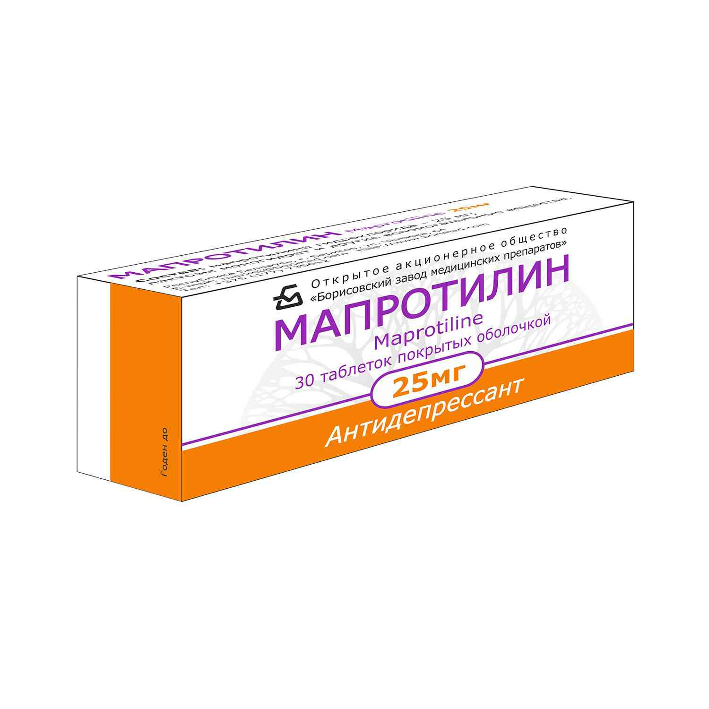
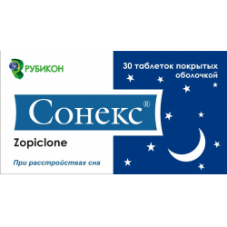
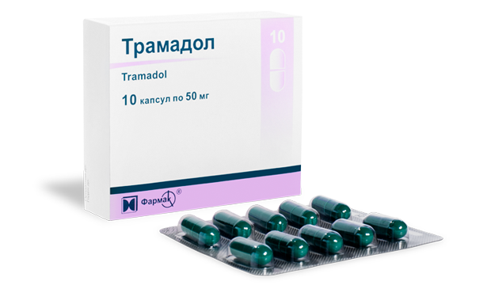

|
   Tramadol Tramadol, sold under the brand name Ultram among others, is an opioid pain medication used to treat moderate to moderately severe pain. |
A drug is any substance (other than food that provides nutritional support) that, when inhaled, injected, smoked, consumed, absorbed via a patch on the skin, or dissolved under the tongue causes a temporary physiological (and often psychological) change in the body. In pharmacology, a drug is a chemical substance of known structure, other than a nutrient of an essential dietary ingredient, which, when administered to a living organism, produces a biological effect. Pharmaceutical drugs are often classified into drug classes—groups of related drugs that have similar chemical structures, the same mechanism of action (binding to the same biological target), a related mode of action, and that are used to treat the same disease. |